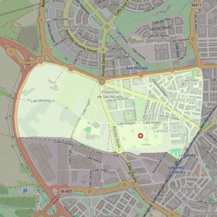

San Nicasio
- Arciprestazgo
- Leganés
- Población
- Leganés
- Dirección postal
- Avda. Dr. Mendiguchia Carriche, 6
- Código postal
- 28913
- Extensión
- 1,25 km² (125 ha)
- Teléfono
- 914 987 585
- Correo electrónico
- sannicasio-leganes@diocesisgetafe.es
- Información demográfica
- De la parroquia · De la población (Leganés) · Del arciprestazgo (Leganés)


Descargar mapaLímites según decreto
“Partiendo de la confluencia de la carretera de Leganés a La Fortuna (M-411) con la Avenida del Mediterráneo, arrancan por el eje de la avenida del Mediterráneo (en dirección oeste); continúan por el eje de la carretera de salida de Leganés a la autovía Alcorcón-Leganés (M-406; dirección noroeste), por el eje de la autovía Alcorcón-Leganés (en dirección sur), por las calles Centeno y Madera (en dirección sureste; ambas aceras de las calles Centeno y Madera no pertenecerán a esta parroquia), por una línea recta imaginaria hasta el ferrocarril Madrid-Portugal (en dirección este), por el eje de las vías del ferrocarril Madrid-Portugal (en dirección noreste), por el eje de la calle Río Manzanares (en dirección norte) hasta la confluencia de la carretera de Leganés a La Fortuna con la Avenida del Mediterráneo, punto de partida” (Boletín Oficial, Junio-2000, pág. 545-546)